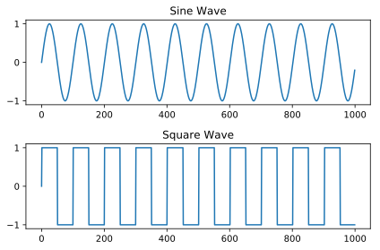

Assignment 1: Audio Processing
by Chris Tralie
Due Wednesday 2/8/2023
The purpose of this assignment is to get students familiar with numpy arrays and some audio concepts with a fun application.
Part 1: Square Wave Method (6 Points)
A square wave of a particular frequency can be obtained by starting with a sinusoid \[ f(t) = sin(2 \pi f t) \] and "quantizing" it by making all positive values 1 and all negative values -1. The figure below shows what this looks like:
Your Task
Write a method get_square_note(sr, p, time) that creates a square wave sampled at a sample rate of sr samples per second with note number p over a duration of time seconds. Recall that the formula to convert from a note number p to a frequency f is
\[ f = 440 \times 2^{p/12} \]
Hints
Hint #1: The easiest way to create a square wave is to first start with a sine wave, and then pass it to the np.sign() function (the "sine" and "sign" get a bit confusing here). To show you what np.sign does, here's an example
will give
[-1, -1, 1, 1]
Hint #2: Be sure to round to the nearest whole number of samples. You can round a variable x down to the nearest whole number by typing int(x)
Below are a couple of examples of calling this method that you should compare yours to:
Part 2: Happy Birthday Squared (6 Points)
Your Task: Use the method you wrote in the last task to create the beginning part of the happy birthday tune. This consists of the following note sequence:
- 0.25 seconds of note number 0
- 0.25 seconds of silence
- 0.25 seconds of note number 0
- 0.25 seconds of silence
- 1 second of note number 2
- 1 second of note number 0
- 1 second of note number 5
- 2 seconds of note number 4
If this works properly, the result should sound like this:
Part 3: Comb Filter Notes And Experiments (10 pts)
As we discussed in class, it is possible to create a note by shaping noise using a "comb filter." We first generate random noise (np.random.randn(num_samples)), then we convolve with a "pulse train" of equally spaced impulses. The notebook below shows an example. Your task in this section is to generalize this and encapsulate it inside of a method
Coding Task
Write a method get_comb_note(sr, p, time, num_pulses) that creates a comb filtered note sampled at a sample rate of sr samples per second with note number p over a duration of time seconds, using num_pulses pulses in the comb filter.
Hints
The trickiest part of this is to figure out what the length in between the pulses should be given the note number. To determine this, compute the frequency f corresponding to the note number, and then use a spacing int(sr/f). This is referred to as the "period," or the number of samples per cycle, rounded down to the nearest integer.
Experiments
After you implement the function, answer the following questions:
- In your notebook, describe what changes in the sound as you add more pulses to the comb filter. You can do this using a markdown cell.
- In your notebook, discuss what happens to the Fourier Transform of the signal when you add more pulses to the comb filter. Based on what you heard, why do you think this is happening? Submit at least two plots with your final submission to demonstrate this.
Part 4: Fourier Transform of Square Waves (8 Points)
Use the code you wrote in part 1 to generate a square wave at a 440hz frequency (note number 0), and plot the magnitude of its Fourier Transform. Based on what you see, come up with an approximation of the square wave by adding sines together. Verify visually and by listening that this approximates the square wave. Make sure your final notebook contains a plot of the square wave, a plot of its Fourier Transform, and a plot of your sinusoidal approximation.
For your own edification, note how your approximations sound a bit like a clarinet. Click here to see why this is the case.
Tips
- Hint: This is like the sawtooth wave series we went over in class, except it only uses half as many sinusoids.
Part 5: Musical Statement (5 pts)
An echo pattern is also known as an impulse response. The comb filters we've looked at so far are the impulse responses of 1D resonant cavities with no loss, but you can measure much more complicated and realistic impulse responses by clapping or popping a balloon in some environment and then recording all of the echoes that come back. You then use these recorded impulse responses to simulate what any sound would sound like in that environment. For example, consider the following audio clip:
Now consider the following impulse response, which was obtained from someone clapping in the JFK tunnel
When we do convolution of the audio clip by this impulse response (also called "convolving" the audio clip with the impulse response), the result is as follows
It really sounds as if "Jessie's Girl" was played in the JFK tunnel!
Your task in this part of the assignment will be to record an impulse response and find a sound to convolve it with. There will be a class wide competition to see who can come up with most creative convolution, and the winner will receive 2 extra credit points on the assignment.
NOTE: You will need to convert any audio you want to use to a .wav file before you can use the above code. You can do this using a program called Audacity. Or, if you're having trouble, simply e-mail me the files and I'll convert them for you. I want to help you realize your creative vision!